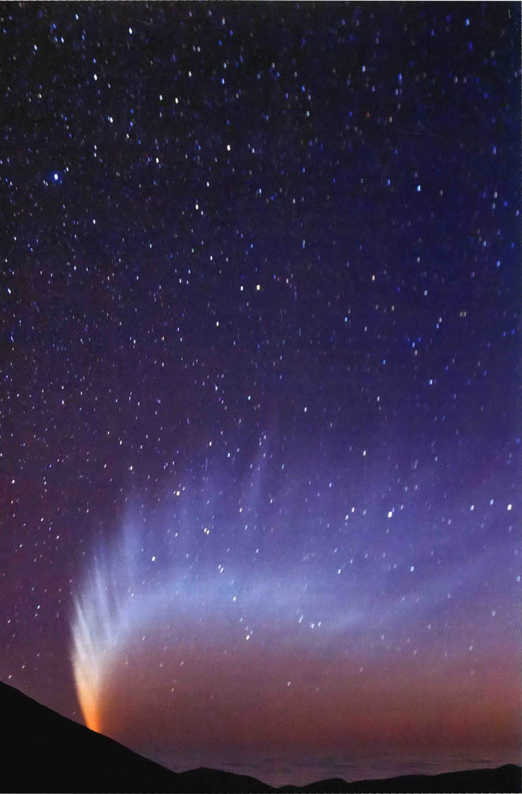
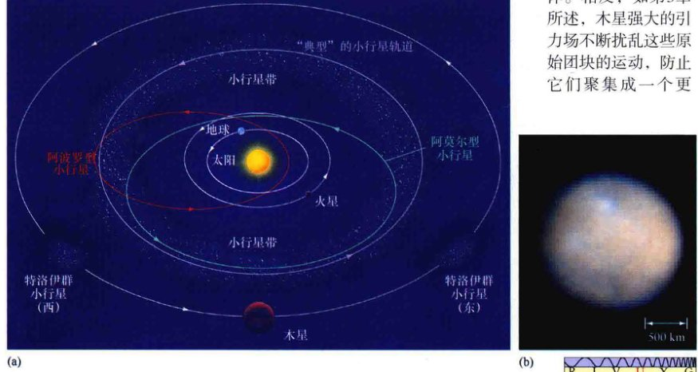
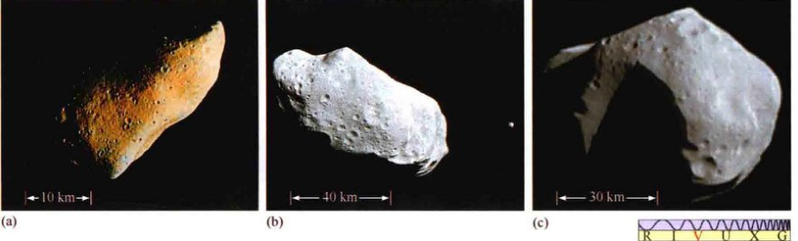
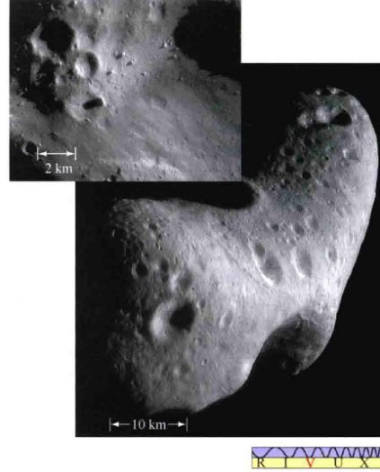
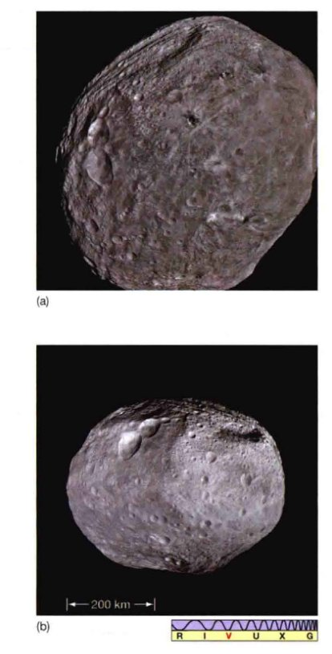
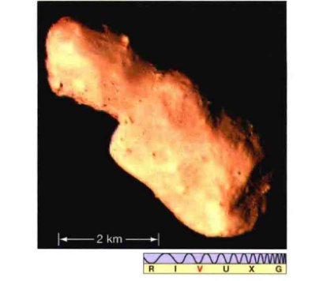
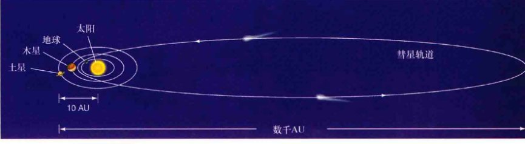
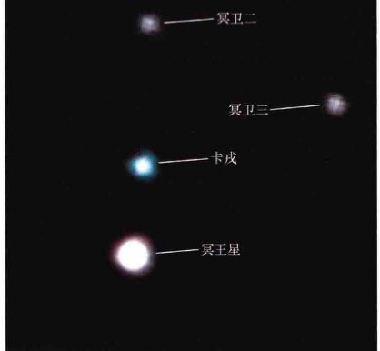
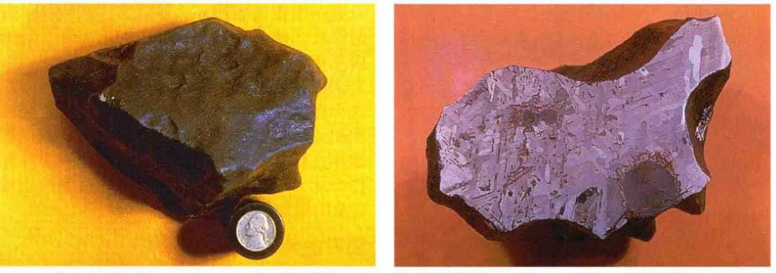

<style>
    /* 基础样式：沉浸式阅读体验 */
    body { 
        font-family: -apple-system, BlinkMacSystemFont, "Segoe UI", Roboto, "Helvetica Neue", Arial, sans-serif; 
        line-height: 1.8; 
        color: #2c3e50;
        max-width: 900px; 
        margin: 0 auto; 
        padding: 40px 20px; 
        background-color: #fff;
    }

    /* 章节单元 */
    .chapter-unit { margin-bottom: 80px; }

    /* 标题体系 */
    h1 { 
        font-size: 2.5em; 
        color: #c0392b; /* 对应PDF中的红色调标题 */
        border-bottom: 4px solid #e74c3c; 
        padding-bottom: 15px; 
        margin-top: 0; 
        margin-bottom: 10px;
    }
    .chapter-subtitle {
        font-size: 1.5em;
        color: #d35400;
        margin-bottom: 40px;
        font-weight: 300;
        display: block;
    }
    h2 { font-size: 1.8em; color: #2980b9; margin-top: 50px; border-left: 5px solid #3498db; padding-left: 15px; }
    h3 { font-size: 1.4em; color: #16a085; margin-top: 35px; }
    h4 { font-size: 1.1em; color: #7f8c8d; font-weight: bold; margin-top: 25px; }
    
    /* 正文 */
    p { margin-bottom: 1.5em; text-align: justify; font-size: 1.05em; }

    /* 特殊区域 */
    .sidebar { 
        background: #fdf2e9; /* 浅橙色背景 */
        padding: 25px; 
        border-left: 5px solid #d35400; 
        margin: 30px 0; 
        border-radius: 4px; 
    }
    .sidebar-title { font-weight: bold; font-size: 1.1em; margin-bottom: 10px; display: block; color: #d35400; }

    .feature-box {
        background: #ecf0f1;
        padding: 30px;
        border: 1px solid #bdc3c7;
        margin: 40px 0;
        border-radius: 8px;
    }
    .feature-box h3 { margin-top: 0; color: #2c3e50; border-bottom: 2px solid #95a5a6; padding-bottom: 10px; }

    .concept-check {
        background-color: #e8f8f5;
        border: 1px solid #a2d9ce;
        padding: 15px;
        margin: 20px 0;
        border-radius: 8px;
        color: #16a085;
    }
    .concept-check::before { content: "✅ 概念理解检查"; display: block; font-weight: bold; margin-bottom: 5px; }

    .exercises { background: #fffcf0; padding: 25px; margin: 40px 0; border: 1px solid #f0e6d2; border-radius: 8px; }
    .question-list { padding-left: 20px; }
    .question-list li { margin-bottom: 10px; }
    
    /* 表格 */
    table { width: 100%; border-collapse: collapse; margin: 20px 0; font-size: 0.9em; }
    th, td { border: 1px solid #ddd; padding: 8px; text-align: left; }
    th { background-color: #f2f2f2; font-weight: bold; color: #333; }
    tr:nth-child(even) { background-color: #f9f9f9; }

    /* 图片占位符 */
    .image-placeholder { 
        background: #f8f9fa; border: 1px dashed #ced4da; 
        display: flex; align-items: center; justify-content: center;
        margin: 30px auto 10px auto; 
        color: #6c757d; font-family: monospace; font-size: 0.8em;
        position: relative;
    }
    .image-placeholder::before { content: "🖼️ Image Area " attr(data-bbox); position: absolute; }
    .caption { font-size: 0.9em; color: #666; text-align: center; margin-bottom: 35px; font-style: italic; line-height: 1.4;}
    .caption strong { color: #c0392b; font-style: normal; }

    /* 列表与引用 */
    ul, ol { margin-bottom: 1.5em; }
    li { margin-bottom: 0.5em; }
    sup { font-size: 0.75em; vertical-align: super; }
</style>
<article class="chapter-unit">
<!-- 封面图片占位 -->

<div class="caption">
<strong>封面图：</strong> 彗星有时也被称为“脏雪球”，因为它们是由沾上了灰尘碎片的冰和雪而组成的。这张麦克诺特彗星的壮观照片是2007年在智利的帕拉那山拍摄的，当时它正“俯瞰”太平洋。其丰富多彩的彗尾横跨近四分之一个天空。其他类似这样的易碎的天体正在环绕太阳运行的过程中朝着我们而来，它们中的某些可能会被蒸发、分解或者被撕裂，从而在天空中呈现出壮观的样子。[ S. 德里斯 (S. Deiries) / 欧洲南方天文台 (ESO) ]
    </div>
<h1>第14章 太阳系的碎片</h1>
<span class="chapter-subtitle">我们起源的关键</span>
<aside class="sidebar">
<span class="sidebar-title">学习目标</span>
<p>本章的学习将使你能够：</p>
<ol>
<li>描述小行星主带的轨道性质。</li>
<li>总结典型小行星的成分和物理性质。</li>
<li>介绍典型彗星的详细组成和结构，解释彗尾的形成和外观。</li>
<li>讨论彗星的轨道特性以及这种特性可以告诉我们关于彗星可能的起源的哪些信息。</li>
<li>描述海王星之外的太阳系，并解释为什么天文学家们不再把冥王星作为行星。</li>
<li>区别流星、流星体和陨石。</li>
<li>总结流星体的轨道和物理性质，并解释这些性质所表明的流星体的可能起源。</li>
</ol>
</aside>
<p>根据目前的定义，太阳系只有八大行星，但还有数十万其他天体也围绕太阳运行。这些小天体——小行星、彗星、柯伊伯带天体、流星体——都很小，与行星及其主要卫星相比，质量可以忽略不计。基于统计学的推测，估计还有超过10亿个这样的天体有待天文学家发现。然而，这些天体中的每一个都是独立的世界，用自己的故事讲述太阳系早期的情况。</p>
<p>这些小天体看起来似乎只是岩石和冰的“碎片”，但与行星不同，它们记录着我们的行星系统形成阶段的信息。它们中的许多是“最初的”，自形成后没有经历过任何演化，所以可以告诉我们许多我们自身起源的情况。</p>
<aside class="sidebar">
<span class="sidebar-title">知识全景</span>
<p>仅仅在几十年前，科学家才开始认真对待这一想法：地球上的生命在十几亿年的进程中被小行星和彗星的撞击不时打断。这对我们来说非常重要——这些“离群”的天体偶尔会掠过地球，有时甚至会撞上我们！太阳系中的碎片可能是了解我们行星诞生甚至生命诞生的关键，但它们也可能会决定我们的命运。</p>
</aside>
<h2>14.1 小行星</h2>
<p>小行星相对比较小，主要由岩石构成，围绕太阳转动。小行星在英语里叫作 "asteroid"，字面意思是“像恒星的天体”。但是，小行星绝对不是恒星，它们太小了，甚至没法被列为行星。天文学家通常把它们称为“较小的行星”(minor planets)，有时也叫作“微型行星”(planetoids)。</p>
<p>小行星在轨道和大小这两方面都与行星不同。如图14.1，它们一般位于火星和木星之间，轨道也有些古怪——与各大行星的近圆轨道有所不同。少数小行星的直径超过300km，这是我们定义的“中型”卫星的大小，不过大多数小行星小得多——可以小到只有0.1km。已知最大的小行星是谷神星（图14.1的插图），仅仅是地球质量的1/10000，直径只有大约940km。综合来看，已知的小行星加起来的总质量也不如月球的质量，所以它们对太阳系总质量的贡献微乎其微。</p>
<h3>轨道性质</h3>
<p>欧洲天文学家早在19世纪就发现了第一颗小行星，当时他们在火星和木星轨道之间搜索一颗额外的行星。意大利天文学家朱塞佩·皮亚齐首次发现了一颗小行星。他于1801年发现了谷神星，并测量其轨道的半长轴为2.8 AU。过了几年，又发现三颗小行星——智神星 (2.8AU)、婚神星 (2.7AU)、灶神星 (3.4AU)。</p>
<p>到了20世纪初，天文学家编目了几百颗小行星，并明确测定了它们的轨道。现在，在21世纪第一个十年已结束的时候，小行星名单已发展到超过25万个。已知的小行星（包括那些轨道尚未得到精确测定，不足以使它们获得“官方”确认的）总数已超过50万个。这些天体中的绝大多数在我们太阳系中一个被称为<strong>小行星带</strong>的区域被发现，位于距太阳2.1~3.3 AU之间——大致位于火星轨道 (1.5 AU) 和木星轨道 (5.2 AU) 的中间。除了特洛伊群小行星之外，所有已知的小行星都在顺行轨道上绕太阳公转，与行星的方向相同。</p>
<p>这些小行星在一个定义明确的带状区域里紧凑地聚集，一直暗示天文学家，它们要么是一颗很久以前碎裂的行星的碎片，要么是一直都没能成功地凝聚成一颗真正行星的原始岩石。在目前已知的最好的证据的基础上，研究人员强烈同意后一种观点。这个带状区域里的质量实在太小，无法构成行星，另外，不同小行星间的显著的化学成分差异表明它们不可能全部起源于同一个天体。相反，如第3章所述，木星强大的引力场不断扰乱这些原始团块的运动，防止它们聚集成一个更大的天体 (3.7节)。</p>

<div class="caption">
<strong>图14.1 内太阳系</strong><br/>
        (a) 小行星主带，以及地球、火星、木星的轨道（这幅图的视角是斜的，既不是俯视，也不是侧视）。注意特洛伊群小行星在木星轨道的两个位置。一些阿波罗型（与地球轨道有交叉）和阿莫尔型（与火星轨道有交叉）小行星的轨道也显示在了图上。(b) 在已知最大的小行星——矮行星谷神星上，小的表面细节比较明显。图像处理揭示了在这张照片中央跨度约250km的结构是一个巨大的撞击坑。[ 美国国家航空航天局 (NASA) / 美国西南研究院 (SWRI) ]
    </div>
<h3>物理性质</h3>
<p>除了少数例外（见图14.1中的谷神星），小行星都太小了，地基望远镜无法观测到其细节，因此天文学家必须依靠间接的方法来确定它们的大小、形状和组成。因此，它们的物理和化学性质中只有一小部分是精确已知的。天文学家可以在一定程度上确定它们的成分，并且发现，小行星不仅与8颗已知的行星及它们的大量卫星不同，它们彼此也有所不同。</p>
<p>小行星可以按照光谱性质分类。最黑暗的，或反射率最低的小行星含有大量的碳。这些小行星被称为<strong>C型小行星</strong>（或碳质的）。反射率高一些的是<strong>S型小行星</strong>，含有硅酸盐或岩石物质。一般来说，S型小行星在小行星带的内侧占主导地位，而随着离太阳越来越远，C型小行星的比例稳步提高。总体来说，所有小行星中大约15%是S型、75%是C型、10%是其他类型（主要是<strong>M型小行星</strong>，含有大量的镍和铁的成分）。许多行星科学家认为，碳质小行星由代表太阳系最早阶段的非常原始的材料构成。自从于46亿年前形成以来，碳质小行星都没有受到过剧烈的加热或发生化学演化。</p>
<p>在大多数情况下，天文学家通过其反射的阳光量和热辐射量来估计小行星的大小。这些观测是困难的，但已经有数千颗小行星以这种方式被测出了大小。在罕见的情况下，天文学家可以看到一颗小行星遮掩恒星，这令他们可以非常准确地确定小行星的大小和形状。最大的小行星大致呈球形，但较小的小行星的形状却可能非常不规则。</p>
<p>三颗最大的小行星——谷神星、智神星和灶神星——直径分别为940km、580km和540km。只有15颗小行星的直径超过300km。大多数小行星的直径比这个数字小得多。几乎可以肯定，还有数十万小行星等待被发现。然而，观测者估计，它们大多数非常小。所有直径超过100km的小行星中大概有99%已经被记录在案了，直径超过10km的小行星中至少有50%已经被发现了。虽然大小不到几千米的小行星在数量上占小行星总数的大部分，但少数直径大于几十千米的大个子却贡献了所有小行星总质量的大部分。</p>
<p>灶神星在小行星中是独特的，尽管它的体积小，但它似乎在遥远的过去经历了火山活动。基于它们的轨道和它们的总体光谱与灶神星的相似性，在地球上发现的大量陨石 (14.3节) 被认为是这颗小行星与小行星带的其他成员碰撞之后四散出来的。值得注意的是，这些陨石具有类似地球玄武岩的成分，这表明它们是因古火山活动形成的。正如下面所讨论的，NASA的曙光号探测器最近提供了关于灶神星的内部结构和历史的重要见解。</p>
<h3>太空中的小行星观测</h3>
<p>对小行星的第一次近距离观测是由木星探测器伽利略号进行的，它在迂回通往木星的道路上，两次穿过小行星带，近距离接触了S型小行星加斯普拉 (1991年) 和艾达 (1993年)。（探索3-2）加斯普拉和艾达 [图14.2 (a)、(b)] 是形状不规则的天体，最大直径分别为约20km和60km。它们表面布满了大小不等的陨石坑，尺度从几百米到2km。</p>

<div class="caption">
<strong>图14.2 小行星近景</strong><br/>
        (a) S型小行星加斯普拉，由空间探测器伽利略号从1600km的距离处拍摄。(b) S型小行星艾达，由伽利略号从3400千米的距离处拍摄。注意右边艾达的卫星艾卫。(c) C型小行星玛蒂尔德，由NEAR宇宙飞船在前往近地小行星爱神星的途中拍摄。注意在这个低密度的大石块表面的巨大撞击坑。所有这些照片的分辨率都是约100m。[ 美国国家航空航天局 (NASA) / 约翰霍普金斯大学 (JHU) ]
    </div>
<p>并覆盖着不同厚度的粉尘层。根据表面陨石坑的密集程度，艾达的年龄被估计为约10亿岁——远比加斯普拉更古老，后者的年龄大约只有2亿年。它们都被认为是很久之前因为撞击而分解的较大天体的碎片。</p>
<p>让大多数天文学家感到惊讶的是，在仔细检查艾达照片 [图14.2 (b)] 时发现了小卫星的存在，该卫星现在被命名为艾卫，直径为1.5km，以大约90km的距离围绕小行星运转。由于小行星带相对拥挤，所以科学家认为，小行星之间的碰撞可能是相当普遍的。特别猛烈的撞击可能是行星际尘埃和较小的小行星的来源，不那么猛烈的撞击可能会导致约束系统和类似艾卫这样的卫星。通过研究伽利略号的照片，天文学家能够估算出艾卫围绕艾达的轨道，因此（使用牛顿的引力定律）估计艾达的质量为约 $(5 \sim 10) \times 10^{16}$ kg。（详细说明2-2）这可以让他们计算出艾达的密度为2200~2900 kg/m³，与它所属的岩质的、S型的分类对应的密度范围相一致。</p>
<p>1997年，近地小行星会合号 (NEAR) 飞船在飞往其主目标——S型小行星爱神星——的途中访问了C型小行星玛蒂尔德。如图14.2 (c) 所示，玛蒂尔德的大小约60km。通过探测其引力拉拽，NEAR测量其质量约 $10^{17}$ kg，这意味着它的密度仅1400 kg/m³。考虑到此密度是如此之低，科学家们认为，玛蒂尔德像许多更小的小行星一样，与其说它们是坚硬的石块，不如说它们更像一个松散结合的“碎石堆”。相对柔软均匀的内部也可以解释为什么在玛蒂尔德表面的许多撞击坑的尺寸出人意料的大。一个坚硬的天体在受到足以产生如此大的陨石坑的撞击时都会碎掉。然而，像汽车的溃缩区，玛蒂尔德松散的内部可能吸收和消散了撞击能量，从而使小行星在撞击中得以幸存。</p>
<p>在2000年2月14日抵达爱神星后，NEAR（那时改名为了NEAR—舒梅克）进入围绕小行星运行的轨道。1年中，飞船发回了爱神星的高分辨率图像（图14.3），仔细测量了它的大小和形状（$34 \times 11 \times 11$ km），以及它的引力和磁场、组成和结构。该飞船的各种传感器揭示了，爱神星是一颗布满撞击坑的固态天体，质量为 $7 \times 10^{15}$ kg，密度大致均匀，为2700 kg/m³。小行星的内部由于过去的无数次撞击而广泛碎裂。测量证实了爱神星确实是早期太阳系留下的原始的、未演化的材料。</p>

<div class="caption" style="text-align: right; clear: right;">
<strong>图14.3 小行星爱神星</strong><br/>
        小行星爱神星的精细拼接图，由降落在了这颗小行星上的NEAR—舒梅克号飞船拍摄，显示了各种规模的撞击坑，大小从50m（图像的分辨率）到5km。插入图显示了一块更“年轻”的表面区域的细节，在那里，近期撞击造成的四散的物质显然已经填满并抹去了旧的撞击坑的踪迹。[ 约翰霍普金斯大学 (JHU) / 美国国家航空航天局 (NASA) ]
    </div>
<p>2011年7月，NASA的曙光号探测器进入绕灶神星的轨道。这是太阳系里体积第三大、质量第二大的小行星。曙光号搭载有许多科学设备：照相机用来测绘其表面，一些仪器用来探测表面和内部的组成。曙光号在灶神星轨道上待了一年多，通过一系列的变轨来到距离其表面200km的地方。</p>
<p>灶神星的质量为 $2.6 \times 10^{20}$ kg，平均半径为540km，这意味着其密度为3500 kg/m³，比大多数小行星的密度高不少。曙光号发现灶神星的内部有一个分化了的结构，包括壳层、幔层和一个直径200km的铁质核心。该小行星在遥远的过去可能曾经熔融过。许多科学家认为，灶神星是唯一一颗已知存活至今的、可以追溯到太阳系形成阶段的真正的原行星 (3.7节)。</p>
<p>灶神星的最显著的表面特征是环绕该小行星赤道的一组深槽，如图14.4 (a) 所示，以及南半球的一群大型撞击坑，其中最大的撞击坑在该小行星的南极形成了一个巨大的圆形盆地，如图14.4 (b) 所示。在南极盆地的中心有太阳系中最大的山脉之一，比其周围高出约22 km以上——约为珠穆朗玛峰高度的三倍。对撞击坑年龄的估计表明，南半球的年龄为10~20亿岁，比北部年轻。南极地区是最年轻的——可能低至10亿岁。极地盆地和赤道槽可能是这样形成的：另一颗巨大的天体与灶神星相撞，摧毁了灶神星的内部。这次撞击可能弹出了许多后来在地球上发现的与灶神星有关的陨石。小行星带是一个狂暴之地！</p>
<p>曙光号在2012年9月离开灶神星，航向它的下一个目的地——矮行星谷神星。</p>

<div class="caption" style="text-align: left; clear: left;">
<strong>图14.4 小行星灶神星</strong><br/>
        2011年，NASA的曙光号飞船飞过灶神星——太阳系第二大的小行星，拍摄了这些照片。(a) 注意几乎沿赤道在较大范围内围绕这个岩石天体的深槽。(b) 这张照片底部附近高耸的山峰的高度是地球上珠穆朗玛峰的两倍以上。[ 喷气动力实验室 (JPL) ]
    </div>
<div class="concept-check">
        描述小行星和内行星之间的一些基本的异同？
    </div>
<h3>越地小行星</h3>
<p>大多数小行星的轨道偏心率在0.05~0.3的范围内，确保它们始终保持在火星和木星轨道之间。极少数小行星的偏心率大于0.4，这些是我们特别感兴趣的，因为它们的路径可能与地球轨道相交，从而有可能与我们的地球发生碰撞。这些天体被统称为越地小行星。这些“迷途”的小行星有着椭率很高的轨道，或者轨道并不在小行星主带里，它们很可能是被附近的行星——主要是木星，另外还有火星——改变了轨道。这两颗行星的引力场可以扰乱正常的小行星轨道，使其偏转进入内太阳系。在越地小行星中，轨道半长轴超过1AU的被称为阿波罗型小行星（以这个类型中第一颗被了解的小行星阿波罗来命名），否则称为阿登型小行星。轨道只穿过火星轨道的小行星被称为阿莫尔型小行星，如图14.1所示。</p>
<p>截至2013年年初，人们已经知道了大约10,000颗越地小行星。大多数是自20世纪90年代末以来被发现的——那时开始了对这些天体的系统搜索。1400多颗越地小行星被官方认定为“有潜在威胁的”，这意味着它们的直径大于150m（比造成图5.18所示的巴林杰陨石坑的陨石大3倍），其轨道可以令其离地球近到0.05 AU (750万千米)。</p>
<p>从人类的角度来看，也许越地小行星最重要的意义是小行星与地球发生实际碰撞具有非常现实的可能性。例如，3km宽的4179号小行星托塔蒂斯（图14.5）在2004年擦过了我们的地球，距离只有150万千米——对于宇宙标准而言，这个距离可以说是在咫尺。两年前，“无害”的、但依然可怕的，大100m直径的小行星2002 MN，来到更接近的地方——从距离我们12万千米（不到地月距离的1/3）处掠过。并且，它在掠过我们的行星后三天才被发现！近期的一次广泛宣传的“险情”，是一颗50m宽的天体2012 DA14在2013年2月在距地球仅仅2.8万千米的地方掠过。巧合的是，前一天，一个不相关的、更小的并且以前完全未知的20m大的流星体进入了大气层，并在俄罗斯南部发生了爆炸，释放的能量相当于六颗现代核弹，并造成了广泛的地表损伤。</p>

<div class="caption">
<strong>图14.5 小行星托塔蒂斯</strong><br/>
        这是最近发布的4179号小行星托塔蒂斯的图像，大小相当于一个小型城市。这是由中国的嫦娥2号飞船拍摄的，嫦娥2号在2012年结束绕月飞行后，被重新赋予了使命——飞掠托塔蒂斯。这张照片代表了中国航天事业的一个了不起的成就，令中国成为继美国、俄罗斯、欧洲等国家和地区后能够独立进行深空探测的国家。[ 新华视点 ]
    </div>
<p>总而言之，在2002年—2012年间，250多颗（我们已知的）具有潜在威胁的小行星在小于0.05 AU处掠过我们的行星，其中4179号托塔蒂斯是最大的。类似数量的小行星预计将在2013—2023年之间也在这个距离内通过。</p>
<p>在接下来的一个世纪，还没有目前已知的潜在危险的小行星会撞击地球——最接近的有惊无险的遭遇预计将发生在2029年4月，一颗直径350米的小行星2004 MN4（也被称为“毁神星”）将在距离地表3万千米处掠过。不过，计算表明，大多数越地小行星最终都将与地球相撞。因此，平均而言，在任何给定的百万年期间，我们的地球大约会被三颗小行星袭击。因为地球的大部分是被水覆盖的，因此其中的两次撞击很可能会发生在海洋中，只有一个会在陆地上。在我们的星球上，几十个大型盆地和被侵蚀的陨石坑被怀疑是古老的小行星撞击的地点（例子可以见后面章节的图14.27）。在月球、金星和火星上的许多大型撞击坑是在其他行星上发生类似事件的直接证据（见探索8-1）。</p>
<p>已知的大多数越地小行星都比较小，直径约1km（虽然我们已经知道还有更大的，其中有一颗直径10km）。即便如此，以人类的标准，哪怕是一颗1km大小的小行星与地球的撞击都可能是灾难性的。这样的天体包含足够的能量，可以摧毁100km见方的面积。爆炸的威力将相当于一百万吨级核弹的一百万倍以上——相当于目前地球上存在的所有的核武器威力的约100倍。致命的冲击波（爆炸产生的冲击，从撞击点快速向周围扩散）和撞击在海洋时可能伴随的海啸（巨浪）无疑会影响到更大的区域。如果一颗击中地球的小行星足够大，甚至可能会导致整个物种的灭绝——事实上，许多科学家认为，恐龙灭绝就源自这样一次撞击（见探索11-1）。</p>
<p>一些天文学家对待小行星撞击十分认真，他们维持着一个“小行星搜索”项目，努力编目和监测所有越地小行星，以便在任何撞击即将发生时最大限度地争取预警时间。现在，几台大型的、专用的望远镜正在巡视天空，在我们的邻近位置寻找暗弱的天体。目前，我们如果将要遇到撞击，所能做的事也非常有限——和科幻电影不同，如果只有几天的预警时间，我们就既无法摧毁小行星，也无法令小行星偏转。然而，科学家们相信，如果有足够的预警时间，比如几年，我们就可以在小行星上安装一个推进器，让微小但持续的“推力”改变小行星的轨道，令其刚刚好和我们擦肩而过。</p>
<h3>轨道共振</h3>
<p>大多数小行星运行在主带中，距太阳约2~3个天文单位之间。不过，有一个不同的小行星类型，被称为<strong>特洛伊型小行星</strong>，在距离木星一定距离的轨道上运行。目前已发现了数百颗这样的小行星。因为木星的强大引力，它们与木星被锁定为1:1轨道共振，就像土星的一些小卫星与中型卫星土卫三和土卫四共享轨道一样，详见第9章中的描述 (9.5节)。</p>
<p>1772年，法国数学家约瑟夫·路易斯·拉格朗日首先进行了计算，综合考虑木星和其他较大天体的引力作用，在太阳系中正好有五个位置可供小天体在与木星同步的轨道上绕太阳运转。（拉格朗日事实上证明了，对任意行星来说，都存在5个这样的点。）这些地方现在被称为行星轨道的<strong>拉格朗日点</strong>。如图14.6所示，这些点中3个（以下简称为L1、L2和L3点）位于木星和太阳的连线上（或其在任一方向的延长线上）。另外两个——L4和L5点——位于木星轨道上，精确地领先和落后木星各60°。所有5个拉格朗日点以与木星同样的速度围绕太阳运转。</p>

<div class="caption" style="text-align: left; clear: left;">
<strong>图14.6 拉格朗日点</strong><br/>
        木星-太阳系统的拉格朗日点，第三天体可以在一个与木星同步的圆形轨道上运行。只有L4和L5的点是稳定的。它们是特洛伊型小行星的位置，如图14.1所示。
    </div>
<p>原则上，任何一颗放置在拉格朗日点的小行星都将与木星步调一致地绕太阳运行，与木星的距离也将始终保持一致。不过，木星和太阳连线上的三个拉格朗日点被称为<strong>不稳定点</strong>——在这里的天体受到扰动稍微偏离这个点，就会倾向于缓慢漂移远离它，不再返回。由于在太阳系里的物质总是不断地受到微小的来自于行星、小行星，甚至太阳风的扰动，物质不会在这些地区积聚起来。因此，在L1、L2或L3点附近没有小行星的轨道。</p>
<p>另外两个拉格朗日点，L4和L5点，都是<strong>稳定</strong>的——无论什么物质，放在它们附近的话，会倾向于留在原地。因此，小行星倾向于在这些点附近积聚，如图14.1所示。因为某种未知的原因，特洛伊型小行星更多的是在木星的前导方向上的拉格朗日点（L4点或东点，因为她在天空中位于木星的东面）上被发现，而不是在尾随点 (L5点) 上。最近，已经发现有一些小的小行星被同样地困在金星、地球和火星的拉格朗日点上。</p>
<p>小行星主带还具有源于共振的结构——虽然不如特洛伊型小行星或者土星光环系统中的空隙和细环那样突出，但仍然很引人注目。仔细的研究发现，其轨道周期与木星轨道周期的比值是简单的分数（比如1/2、1/3、2/5等）的小行星在整体分布上明显很缺乏。正如卫星和光环粒子之间反复的相互作用可以导致土星环上的空隙，来自木星的引力共振并没有在空间中造成“空洞”，而是在小行星周期（或半长轴）的分布上造成了空洞 (9.4节)。这些空洞被称为“柯克伍德空隙”，以它们的发现者，19世纪的美国天文学家丹尼尔·柯克伍德命名。</p>
<div class="concept-check">
        为什么天文学家如此热衷于研究越地小行星？
    </div>
<h2>14.2 彗星</h2>
<p>彗星通常在其距离太阳还有好几个天文单位时就被发现了，那时它们只不过是天空中暗淡而模糊的光斑。彗星在一个椭率很高的轨道上运行，太阳位于椭圆的一个焦点上（图14.7）。当彗星接近太阳时会增亮，并出现一个伸长的彗尾。（“彗星”的英文是comet，这个词来自于希腊单词 "kome"，意思是“头发”。）随着彗星离开太阳附近，其亮度和彗尾都会减少，直到它再次去到遥远的地方，成为一个微弱的光点。类似行星，彗星并不发射可见光，而是反射（或再发射）太阳光。每一年，人们会发现几十颗穿过内太阳系的彗星。必然还有更多看不见的彗星也这样穿过。</p>

<div class="caption">
<strong>图14.7 遥远的轨道</strong><br/>
        彗星在高度偏心的轨道上运行，这样的轨道将它们带到远离所有已知的行星的地方。它们相当长的轨道周期意味着大多数彗星在进入内太阳系前从未在人类历史上出现过，这令它们的出现无法被预测，也很难对其与地球的任何（罕见的）近距离遭遇给出预警。
    </div>
<h3>彗星的外观和结构</h3>
<p>图14.8显示了一个典型彗星的各个部分。即使通过大型望远镜，<strong>彗核</strong>——彗星最主要的呈固态的“身体”——也只是一个微小的光点。一个典型的彗核非常小，直径只有几千米。在其轨道上的大部分时候，彗星都远离太阳，只有这种冻结的彗核存在。当彗星来到离太阳只有几个天文单位时，它冰冻的表面因变得太热而不能保持稳定。彗星的一部分变成气态，并扩展到太空中，形成弥散的<strong>彗发</strong>（“光晕”）——围绕彗核的尘埃和蒸发的气体。这种固体（在这种情况下冰）直接转化为气体，而不是先变成液体的变化过程叫作<strong>升华</strong>。地球上冻结的二氧化碳（干冰）提供了这种升华的一个常见的例子。在太空中，当冰暴露在热量中时，它会升华，这一点是一般规律，并不是特殊状况。</p>

<div class="caption">
<strong>图14.8 彗星结构</strong><br/>
        (a) 一个典型的彗星示意图，显示了彗核、彗发、氢包层和彗尾。彗尾并不是类似流星或烟花那样，是彗星在天空中留下的轨迹。相反，它与彗星的其余部分一起（只要足够接近太阳使彗尾能够存在）运行。注意，无形的氢包层通常大于彗星的可见范围，它甚至常常大于这里绘制出来的情况。(b) 1986年过近日点前约1个月的哈雷彗星，以近似比例地显示在这里。[ 美国国家光学天文台 (NOAO) ]
    </div>
<p>当彗星接近太阳时，彗发变得更大更亮。最大时，彗发的直径可以达到10万千米——几乎与土星或木星一样大。在彗发的外面是看不见的<strong>氢包层</strong>，通常被太阳风所扭曲，伸展开来会跨越上百万千米的空间尺度。<strong>彗尾</strong>是当彗星最接近太阳时最明显的结构，这时彗核的升华速度达到最大，彗尾的长度甚至可以高达1 AU。在地球上看，只有彗发和彗尾是肉眼可见的。尽管彗尾很长，但彗星大部分的光却来自彗发。然而，彗星的大部分质量却集中在彗核上。</p>
<p>彗尾可以被分为两类。比较直的<strong>离子尾</strong>往往是由发光的呈直线的光束组成，如图14.9 (a) 中看到的那样。它们的光谱展示出大量的电离分子——已经失去了一些正常电子的分子——的发射线，包括一氧化碳、氮气、水，以及许多其他分子。<strong>尘埃尾</strong>通常更广阔、更弥散，略有弯曲，如图14.9 (b) 所示。其中丰富的微小尘埃颗粒反射阳光，使尾部在远处也可以被看见。</p>
<p>因为太阳风（从太阳上逃逸出的、看不见的物质和辐射流），彗尾的方向在所有情况下都是背向太阳的。因此，如图14.10所示，彗尾总是不在彗星的轨道上，并且实际上在彗星离开太阳时引导着彗星。</p>
<p>离子尾和尘埃尾有不同的形状，因为气体和尘埃对星际空间中的作用力有不同的反应。在我们太阳系中的每一个微小的粒子——包括那些在彗尾中的——都沿着由引力和太阳风决定的轨道运行。如果只有引力作用，按照牛顿的运动定律，粒子将遵循与母彗星相同的弯曲路径 (2.7节)。如果太阳风是唯一的影响，那么彗尾将被它吹散，快速地背离太阳而去。离子尾受太阳风的影响比受太阳的引力影响更强烈，因此这些尾巴总是笔直地指向远离太阳的方向。较重的尘埃颗粒会更多地倾向于跟随彗星的轨道，从而使尘埃尾略微弯曲。</p>

<div class="caption" style="text-align: right; clear: right;">
<strong>图14.9 彗尾</strong><br/>
        (a) 在这里看到的1959年出现的贾可比尼-金纳彗星，主要表现为离子彗尾。它的彗发直径大约为10万千米，彗尾长度超过50万千米。(b) 1997年的海尔-波普彗星，同时显示出离子尾（深蓝色）和尘埃尾（蓝白色），都呈现出一点儿弧度和尘埃固有的模糊性。在彗星最接近太阳时，它的彗尾在天空划过近40°。[ 美国海军天文台 (U.S. Naval Observatory)、W. 帕克卡 (W. Pacholka) ]
    </div>
<p>哈雷彗星可以说是最有名的彗星。1705年，英国天文学家埃德蒙·哈雷意识到，这颗彗星在1682年的出现并不是一次孤立的事件。他分析了之前对这颗彗星做出的目击报告，计算了它的路径，发现这颗彗星以76年的周期绕太阳公转。他预测在1758年，这颗彗星会再现。哈雷对彗星轨道的成功确定和他对彗星回归的预测是牛顿的运动和引力定律在早期的伟大胜利 (2.7节)。虽然哈雷并没有活到他的计算被证实的那一天，但这颗彗星仍然以他的名字命名，以纪念他的功绩。</p>
<p>一旦天文学家知道了彗星的周期，他们就可以在时间上向前追溯这颗彗星的起源。许多古文明的历史记录显示，自公元前240年起，哈雷彗星的每一次回归都被观测到了。哈雷彗星的彗尾可以达到几乎整整一个天文单位的长度，划过天空绵延数十度，实在是非常壮观的景象。图14.11 (a) 所示是1910年在地球上观测到的哈雷彗星。它最近一次出现是在1986年 [图14.11 (b) 和图14.8 (b) 所示]，从地面观测并不理想，因为它到达近日点时，从地球上看基本上正好位于太阳的对面。但该彗星被飞船近距离地探测了（见下文）。它的轨道如图14.12所示。它下一次访问内太阳系的预定时间是在2061年。</p>
<h3>彗星的物理性质</h3>
<p>偶尔可以通过观测彗星如何与其他太阳系天体发生作用来估计彗星的质量，或通过测定彗核的大小和假设冰混合物的密度来计算彗星的质量。这些方法估计出的典型的彗星质量范围为 $10^{12} \sim 10^{16}$ kg，相当于比较小的小行星的质量。</p>
<p>彗星的质量随着时间的推移而减少，因为彗星每次从太阳附近经过时，就会有一些物质从它的表面蒸发散逸。对于距太阳在1个天文单位以内的彗星，其蒸发速度可以高达每秒 $10^{30}$ 个分子，即在太阳附近（在地球的轨道以内）的彗星每秒钟损失约30吨物质。天文学家们估计，这样的物质损失情况，甚至在几千个轨道周期里就会破坏一颗大彗星，如哈雷彗星或海尔-波普彗星 [如图14.9 (b) 所示]。</p>

<div class="caption" style="text-align: left; clear: left;">
<strong>图14.10 彗星的轨道</strong><br/>
        当它接近太阳时，彗星出现离子尾，它总是指向背对太阳的方向。到更加接近太阳时，会出现稍有弯曲的尘埃尾，并且往往落后于离子尾。你可以将这张图与一张真正的彗星的照片进行比较，例如图14.9。
    </div>
<p>在探寻彗星状天体本身的物理构成的过程中，天文学家被这样一些事实所引导：彗星尘埃反射阳光，同时也有一些特定的气体发射明亮的谱线，包括氢、氮、碳和氧等。即使在原子、分子和尘埃颗粒都蒸发开来产生彗发和彗尾时，彗核本身仍然保持为寒冷的气体和尘埃的混合物，其密度几乎不超过一个松散堆积的密度为约 100 kg/m³ 的雪球，温度只有几十开尔文。专家们现在认为，彗核主要由内部混杂着尘埃颗粒的甲烷、氨、二氧化碳，以及普通水冰的混合物构成。（这些成分应该是你相当熟悉的，是外太阳系大部分小卫星的主要组成部分。）(9.5节、10.5节) 因为这样的成分，彗星常常被形容为“脏雪球”。</p>
<h3>探测彗星的空间飞行任务</h3>
<p>到目前为止，人类航天器近距离探访了三颗彗星。当哈雷彗星在1986年回到太阳附近时，一个由前苏联、日本，及一批西欧国家派出去的小型探测器舰队前往迎接它。其中，前苏联的一个探测器，织女星2号，穿过了这颗彗星的彗发，来到距离彗核8000km的地方。利用这个近距离交会的探测器获得的彗核位置信息，欧洲的乔托号探测器（以一位意大利艺术家的名字命名，他在哈雷彗星于1301年的回归后没多久画下了这颗彗星）在距离彗核只有600km的范围内飞过，图14.13显示了乔托号拍摄的彗核照片，以及其结构的草图。</p>
<p>哈雷彗星的彗核是不规则的马铃薯形状的物体，长15km，最宽处10km，几乎是乌黑的——黑如细磨木炭或煤灰。固体彗核外面笼罩了一片尘埃云，散射光充满整个彗发。部分由于这种散射，部分由于尘埃消光，所有到访的探测器都没能辨别彗核表面上的更多细节。</p>
<p>该探测器找到了数种物质喷流从彗核喷出的直接证据。哈雷彗星的彗核并不是整个表面均匀地蒸发形成彗发和彗尾，气体和尘埃只是从被阳光照亮部分的一些小区域中泄露出来。可能主要是这些喷流的动力导致了观测到的这颗彗星53h的自转周期。就像太空船上做机动动作的火箭一样，这种喷流可能会导致彗星改变其自转速度，甚至偏离一个完美的椭圆轨道。天文学家曾经基于一些略微偏离开普勒定律的彗星轨道的观测预言了这种非引力力量的存在。与哈雷彗星的遭遇使他们第一次真正看到了工作中的喷流。</p>

<div class="caption">
<strong>图14.12 哈雷彗星的轨道</strong><br/>
        哈雷彗星比大多数彗星具有更小的轨道和更短的周期，但它的轨道方位不是一个典型的短周期彗星。在过去的某个时候，这颗彗星必然近距离交会了类木行星（很可能就是木星本身），而被扔到一个更紧凑的轨道上，远日点不用再延伸到奥尔特云，而只是在海王星外面一点儿的地方。
    </div>
<p>1999年，NASA发射了星尘号探测器，目标是有史以来第一次收集彗星物质的样本，并把它们送回地球。2001年，飞船得到地球的引力协助，将其提升到可以“拦截”维尔特二号彗星的轨道上（“维尔特”是德语 “WILD” 的音译）。之所以选择这颗彗星，是因为它是一个相对较新的内太阳系的造访者，并在1974年与木星相遇后偏转到目前的轨道。因此，在它于很久以前形成以来，一直没有受到多少太阳能的加热，也没有因为蒸发而损失多少质量。</p>
<p>2004年，星尘号接近彗核200km范围内，如图14.14 (a) 所示，用一个特别设计的泡沫状“气凝胶”探测器收集彗星颗粒，如图14.14 (b) 所示。星尘号在2006年返回地球，将这些颗粒带给任务科学家，他们现在正在研究这些自从我们的太阳系形成以来就很可能没有发生过明显变化的天体的详细物理、化学和生物学特性。正如图14.14 (c) 所示，气凝胶的表现堪称完美，有史以来第一次为研究人员提供了彗星物质样本。还有其他的发现：对样本进行详细的化学分析揭示了明显形成于深空的富含氮的有机物质，还有未预料到的应该只在高温下形成的硅酸盐物质存在的证据，可能挑战天文学家目前的太阳系形成模型 (3.7节)。</p>
<p>NASA的一个最近的任务有着一个更加“暴力”的结局。2005年7月4日，一个400kg重的“子弹”从NASA的深度撞击号探测器发射出来，以超过10 km/s (36000 km/h) 的速度撞击坦普尔1号彗星，从彗星的表面炸出气体和碎片到星际空间，而飞船本身从500km外的安全距离观测。图14.15显示了撞击后约1min的爆炸图像。喷出气体的光谱分析为科学家提供了彗星内部组成物质——也就是早期太阳系的原始物质——的清晰视图，确认了水冰和许多有机分子的存在。对撞击坑的观测表明，彗星内部是低密度的、“蓬松”的，与前面介绍的彗星结构的“脏雪球”模型一致。</p>
<!-- Exploration Box 11-1 -->
<div class="feature-box">
<h3>探索 11-1：是什么杀死了恐龙？</h3>
<p><strong>恐龙 (dinosaur)</strong> 这个词源自希腊单词 "deinos"（可怕的）和 "sauros"（蜥蜴）。恐龙不是普通的爬行动物：在它们的全盛时期，大约1亿年前，恐龙是地球上最强大的主宰。世界上所有的大洲都已经发现了恐龙化石。尽管它们占据了这么大的优势，但根据化石记录，在约6500万年前，这些生物从地球上消失得相当突然。它们发生了什么？</p>
<p>直到最近，在古生物学家中占优势的看法是恐龙是脑容量相当小的冷血动物。在寒冷的气候条件下，甚至是在夜间，这些巨大的爬行动物的代谢会变得迟缓，使它们难以走动保证食物的安全。该观点认为，它们这样的特点不足以适应地球气候的突然变化，所以最终灭绝了。然而，虽然存在争议，但一个颇具竞争力的理论已经出现了：最近的化石证据表明，许多恐龙可能实际上已经是热血动物了，并拥有相对较快的移动速度——不再是早期概念中痴呆、行动缓慢的大块头形象了。在任何情况下，能够主宰地球超过1亿年的物种的结构不可能太差。作为比较，人类迄今只主宰了地球200万年多一点。</p>
<p>如果恐龙并不是因为愚蠢和僵化而灭绝，那究竟是什么事导致它们突然完全消失呢？关于这个问题已经有了很多解释。毁灭性的瘟疫、磁场逆转、构造活动的增加、严重的气候变化，以及超新星爆发都被提出过。(4.4节、4.5节) 在20世纪80年代，有人认为，6500万年前，一颗巨大的外星物体与地球相撞，这是现在（可以说）最主流的解释恐龙灭亡的理论。</p>
<p>按照这个理论，一颗大约 10~15km宽的小行星或彗星袭击了地球，释放的能量相当于人类制造的最大的氢弹能量的1000万倍以上，将巨量的尘土（包括撞击天体本身粉碎的残渣）高高地抛入大气中。（见第一幅图）。尘土可能会笼罩我们的行星许多年，在那段时间，太阳的光芒几乎熄灭了。在黑暗的地表，植物无法存活。整个食物链都被打乱了，而恐龙在食物链的顶部，最终灭绝。</p>
<p>虽然我们没有直接的天文学上的证据来证实或驳斥这种想法，但我们可以根据观测到的越地轨道上的天体数量来估计今天一颗大的小行星或彗星撞击地球的可能性。第二张图显示了撞击天体大小和撞击函数关系。横坐标表示碰撞释放出的能量，单位为百万吨级TNT。百万吨级——$4.2 \times 10^{15}$ J，相当于一个大型核弹头的爆炸威力——是可以描述这类撞击事件的唯一合适的单位。</p>
<p>我们可以看到，1亿倍百万吨级的事件——如据推测导致了恐龙灭绝的行星级大灾变——是非常罕见的，每1000万年左右只发生一次。然而，较小的撞击“只”相当于几十万吨级TNT的威力（大致相当于1945年摧毁了广岛的原子弹的威力），可能每隔几年就会发生——我们可能已经很久没有遇到这类事件了。最近的一次较大的撞击，是1908年发生在西伯利亚的通古斯大爆炸，形成了大约1百万吨级的冲击，如图14.28所示。</p>
<p>支持“恐龙灭绝是小行星撞击的结果”这一理论的主要地质学证据，是一层富含铱元素的黏土。这一黏土层在我们地球各个地方的约6500万年前的岩石沉积物中被发现。铱在地球表面上是罕见的，因为它们大部分在很久以前就沉入了我们星球的内部。在这一层黏土中，铱的丰度大于其他陆地岩石的10倍左右，但它与我们在陨石中发现的铱的丰度符合得很好（我们可以合理假设，在小行星和彗星中也是如此）。这次灾难性撞击的地点也已被初步确定为墨西哥尤卡坦半岛的奇克苏鲁布附近。在那里，一个被严重侵蚀但还没有被完全抹去的、大小和年龄也恰到好处的撞击坑存在的证据已经被发现。</p>
<p>这个理论也不是没有反对者。或许可以预见的是，地球上的灾变来自行星际空间的想法会迅速被大多数天文学家所接受，但它仍然在一些古生物学家和地质学家中存在争议。反对者争论说，在全球不同的地方、黏土层中铱含量变化很大，这一点并没有一个完整的解释。他们认为，铱也许是火山产生的，与来自地外的撞击毫无关系。</p>
<p>尽管如此，距该理论被首次提出已经过去了30年，争论的焦点似乎已经转移了。6500万年前发生了一次重大撞击的事实已经被广泛接受，现在争论得最多的是，该事件是否实际上造成了恐龙的灭绝，或者仅仅是加速了已经在进行的过程而已。无论如何，我们知道这样的灾难性事件能够发生也确实发生过，这是我们了解自己星球进化历史的一个重要里程碑。这一点也被1994年发生的苏梅克—列维9号彗星撞击木星的事件所支持。（探索8-1）此外，有越来越多的证据表明，在更遥远的过去，有更加重大的撞击，并更加彻底地扫荡了进化的成果。科学往往就是这样，当偶尔获得新的数据时，争论还会继续，但在争论中，我们慢慢取得了达成共识的标准，更重要的是获得了我们对行星环境的新的见解。(1.2节)</p>
<p>作为一般的规则，我们可以预见，全球性灾难对一个行星上的优势物种是坏事。作为目前地球上的优势物种，现在的我们将会是失去最多的。</p>
</div>
<div class="concept-check">
        在组成方面，小行星与彗星有哪些不同？
    </div>
<h2>14.3 海王星之外</h2>
<p>从来没有人在遥远的奥尔特云观测到任何彗星——对于地球上的我们而言，它们体积太小、太暗弱。但是，在20世纪90年代，下面这样的一些暗弱天体开始被观测到了——位于相对较近的柯伊伯带，只是稍微超出了海王星轨道，距太阳30~50 AU。它们被统称为<strong>柯伊伯带天体</strong>。另外，随着搜索的扩大，更遥远的天体也逐渐被发现。对任何轨道超出海王星的小天体的通称——包括柯伊伯带天体——是<strong>海王外天体</strong>。</p>
<p>地基望远镜一马当先，在近几年付出了艰苦努力，捕捉这些暗弱的外太阳系“居民”反射的微弱太阳光。然而，有一个柯伊伯带“居民”，我们已经认识了几十年，这就是冥王星。对这个遥远地区的研究，让我们从回顾这个最突出的成员开始吧。</p>
<h3>偶然发现的冥王星</h3>
<p>大约在19世纪末，对天王星和海王星轨道的观测暗示，海王星的影响不足以完全解释天王星运动的异常。此外，海王星本身似乎也可能受到其他一些未知天体的影响——也许可能是另一个行星。由于曾经成功发现了海王星，所以天文学家希望使用类似的技术寻找这个新天体的准确位置。最热心的搜索者之一名叫珀西瓦尔·洛厄尔，他是一名有能力的、持之以恒的观测者，在当时也是一位有名的天文学家。（回想一下，他也是“火星上的‘运河’是由智慧生命建造的”这一理论的主要倡导者，见5.8页的开篇介绍。）</p>
<p>基于他主要对天王星的运动所做的调查（海王星的轨道在当时确定得比较粗略），并使用类似亚当斯和勒威耶较早前开发的搜索海王星的技术，洛厄尔计算出了新的天体应该在的位置。他坚持搜寻了十年，却没有成功，直到1916年去世。14年后，美国天文学家克莱德·汤博，利用改进的设备和更好的摄影技术，在洛厄尔天文台成功地找到了新的天体，离洛厄尔的预测位置只有6°远。这个天体被命名为“普鲁托”（译为“冥王星”），这是罗马神话中主持永恒的黑暗的死神的名字（也因为其前两个字母和其天文符号是“洛厄尔”的缩写）。冥王星的发现于1930年3月13日被宣布，这一天是珀西瓦尔·洛厄尔的生日，也是赫歇尔发现天王星的周年纪念。</p>
<p>表面上看，冥王星的发现是天体力学另一个令人瞩目的成就。然而，现在看来，所谓的天王星和海王星运动的异常是根本不存在的，而且，冥王星的质量直到20世纪80年代才被准确测量——冥王星的质量太小了，远小于能够对天王星和海王星造成影响的程度。冥王星的发现更像是靠简单的运气，而不是靠复杂的数学！</p>
<h3>冥王星的轨道与物理性质</h3>
<p>冥王星的轨道相当扁长，偏心率为0.25，相对于黄道面的倾角为17.2°。由于较大的轨道偏心率，所以冥王星与太阳的距离变化很大。在近日点，它位于距太阳29.7 AU (44亿千米) 的位置，处在海王星的轨道内。在远日点，它到太阳的距离是49.3 AU (74亿千米)，位于海王星轨道之外很远的地方。冥王星最近一次过近日点是在1989年，然后直到1999年2月都一直保持在海王星轨道以内。由于冥王星的轨道周期为248年，因此同样的情景将会直到23世纪中叶才会出现。</p>
<p>冥王星的公转周期正好精确地等于海王星的1.5倍，换句话说这两个天体被锁定在3:2共振（每3个海王星轨道等于2个冥王星轨道）。因此，即使它们的轨道出现交叉，冥王星和海王星也没有相互碰撞的危险。由于共振和冥王星轨道平面的倾斜，这两个天体最接近时的距离实际上是约17 AU（作为比较，冥王星最接近天王星时，距离只有11 AU）。正如太阳系中的其他共振现象，冥王星与海王星的3:2共振并非偶然。正如在第12.4节所解释的，它是数十亿年来外太阳系演化的直接结果。</p>
<p>回忆第3章，海王星被认为受到了星子的影响，正在慢慢向外漂移，并帮助形成了柯伊伯带 (3.7节)。在它这样做时，对应于它3:2共振的半径也向外扫过“幸存”下来的星子。许多星子——包括冥王星——在共振轨道附近被捕获，随着海王星运行，并随着它逐渐漂流向当前地点而永远被它同步锁定。约15%的柯伊伯带天体——被称为“冥族小天体”——共享着冥王星的轨道共振。</p>
<p>冥王星是如此之远，以至于我们对它的物理性质知之甚少。直到20世纪70年代末，对它表面反射的阳光的研究表明，它的自转周期短于一星期，但其质量和半径的测量均是不确定的。所有这一切在1978年有了改变，天文学家在美国海军天文台发现冥王星有一个同伴。它被命名为“卡戎”（又称“冥卫一”），这是神话中将死者摆渡过冥河，进入冥府——也就是普鲁托的领地——的船夫的名字。</p>

<div class="caption">
<strong>图14.18 冥王星和卡戎</strong><br/>
        (a) 发现冥王星的卫星卡戎时的原始照片。这颗卫星是图像上偏右的小光斑。(b) 冥王星-卡戎系统，与 (a) 尺度相同，但有着更好的分辨率。这是由哈勃太空望远镜拍摄的。[ 美国海军天文台 (U.S.Naval Observatory)、美国国家航空航天局 (NASA) ]
    </div>
<p>卡戎的发现允许天文学家以极高的精度来测量这两个天体的质量和半径。卡戎的轨道面相对于冥王星绕太阳公转的平面的倾角为118°。纯粹因为运气，在1985年至1991年的6年期间（距卡戎被发现不到10年），这两个天体碰巧处于这样一个相对位置——在地球上的观测者能看到一系列掩食现象。在合适的位置上，我们能看到冥王星和卡戎反复从对方的前面经过。图14.19给出了这种轨道情况的示意图。另外还有更多的好运，这些掩食正好发生在冥王星离太阳最近的时候，而这时是从地球上观测的最佳的时机。</p>
<p>科学家们主要计算了冥王星和卡戎周期性的遮掩对方造成的反射光的变化，得到这样一个结果：冥王星和卡戎运行在一个圆形的、潮汐锁定的轨道上，周期为6.4天，它们之间的距离是19,700km。由此得到，冥王星的质量只相当于地球质量的0.0021 ($1.3 \times 10^{22}$ kg) 倍，远远小于以往任何估计。（详细说明2-2）冥王星的直径是2270km，大约是地球直径的1/5；卡戎的直径大约是1300km。如果这两个天体有相同的成分（可能是一个合理的假设），卡戎的质量必然是冥王星的大约1/6。</p>
<p>冥王星和卡戎的质量和半径意味着它们的平均密度为2100 kg/m³——符合我们的预期，这种大小的天体主要由水冰构成，就像外行星的较大的卫星 (3.2节)。事实上，冥王星与海王星的大卫星海卫一在质量和半径上都非常相似，而这颗卫星，正如我们之前所看到的，被认为是一颗被捕获的柯伊伯带天体 (10.5节)。光谱揭示了冰冻甲烷的存在，这是作为冥王星表面的主要组成部分，意味着冥王星的表面温度可能不到50K。冥王星可能也有稀薄的甲烷大气，与在其表面上的甲烷冰相关。</p>
<h3>海王外天体的性质</h3>
<p>大多数柯伊伯带天体不容易被观测，而冥王星恰好是这类天体中已知的最大的成员，公转轨道靠近柯伊伯带的内边缘，使其从地球上看起来显得比较明亮。大多数海王星外天体——甚至较大的天体——都非常暗弱。图14.21显示了这些遥远天体的一些目前已获得的最好的照片（除了冥王星和卡戎）。天文学家只知道有关它们很少的信息——轨道的一小段，通过它可以推断出距离、半长轴、周期和偏心率；亮度，可以转换成估计的直径；有时亮度会变化，这可能意味着自转 or 其同伴的存在。</p>

<div class="caption">
<strong>图14.21 柯伊伯带天体</strong><br/>
        (a) 这些照片显示了一些柯伊伯带天体的最清晰的影像，小行星福鲁斯——图像上的模糊斑点（用箭头标记）——在几天里改变了它的位置。它的直径大约为100km、距地球超过40 AU。(b) 夏威夷凯克天文台用红外拍摄的海王外天体阋神星 (Eris) 和它的卫星阋卫一 (Dysnomia)（这两个天体分别以希腊神话中纷争女神和她的女儿的名字命名）。[ 月球和行星实验室 (LPL) / 凯克望远镜 (Keck) ]
    </div>
<p>然而，天文学家们已经改进了他们的观测技术，已知的海王外天体的数量迅速上升。截至2013年年初，这类天体的数量已经超过了1600个，多数在柯伊伯带。因为它们是如此小而遥远。研究者们相信，目前观测到的只是一小部分，柯伊伯带中大小超过100km的天体的数量将会超过10万个。如果是这样，那么柯伊伯带所有的碎片加在一起的质量很可能是内小行星带总质量的几百倍（虽然仍然比地球的质量更小）。</p>
<p>不幸的是，冥王星作为行星的地位遇到了麻烦。随着冥王星各种细节的揭示，并且海王外天体数量的增加，天文学家越来越清晰地认识到，冥王星与其他外太阳系的小天体并没有明显的不同。发现于2002年的柯伊伯带天体创神星 (Quaoar)，直径大约为1200km——大于最大的小行星谷神星，大小超过冥王星的一半。2003年发现的柯伊伯带天体妊神星，以及2005年发现的鸟神星更大一些，直径约1500~2000km。但最后一击来自2005年发现的（非柯伊伯带）天体阋神星 [Eris，很恰当的以希腊神话中的纷争女神的名字来命名，如图14.21 (b) 所示]，哈勃空间望远镜于2006年测得其直径为2400km——比冥王星大。</p>
<h3>柯伊伯带之王</h3>
<p>即使在阋神星发现之前，许多天文学家已经得出结论，冥王星并非什么特殊天体，而仅仅是已知最大的柯伊伯带天体，它在柯伊伯带的角色和谷神星在小行星带的角色差不多。后来，又发现了比冥王星更大的阋神星，这一事实使得天文学家必须建立一个新的分类，来反映对外太阳系的新的认识。在2006年，国际天文学联合会 (IAU) 通过了有史以来第一个关于行星的定义：满足下列条件的天体被定义为行星：</p>
<ol>
<li>它围绕太阳公转。</li>
<li>它的质量足够大，通过自身的重力使自己的形状大致成球形。</li>
<li>它已经清除了其轨道附近的“邻居”（其他碎片）。</li>
</ol>
<p>清除“邻居”意味着这个天体扫荡（撞击）了与其轨道恰好相交的任何碎片，或者说，它的引力已经将大多数这样的碎片踢到了太阳系的其他位置上（探索3-1）。</p>
<p>冥王星当然满足了前两个条件。然而，该定义的第3点将冥王星排除出了行星的行列。使用的措辞是明确的——要确保行星是巨大的，足以在其附近称霸。而冥王星呢，轨道位于拥挤的柯伊伯带内，并被共振锁定在海王星的轨道运动上，显然不符合这一条件。事实上，正如我们在太阳系（第3章）的章节中看到的，柯伊伯带恰恰是海王星和天王星通过清除自己轨道附近的行星际碎片确立自己的行星地位而形成的 (3.7节)。仿佛是为了寻求安慰，以免完全剥夺冥王星的头衔，国际天文学联合会发明了一个新的术语给那些满足条件1和2、却不满足条件3的天体，将它们称为<strong>矮行星</strong>。阋神星、冥王星、鸟神星、妊神星和谷神星都属于这一类。图14.22中的其他一些天体，一旦它们的性质被更好地确定了，它们也可以被归类为矮行星。2008年，IAU决定，海王星轨道之外的冰质矮行星今后将统称为<strong>类冥天体</strong>。</p>

<div class="caption">
<strong>图14.22 海王外天体</strong><br/>
        一些大的海王外天体，包括冥王星和已知最大的阋神星。作为对比，画出了地球的一部分以及月球。大多数的直径是近似的，因为这是从被观测天体的亮度估计得到的。[ 美国国家航空航天局 (NASA) 、加州理工学院 (Caltech) ]
    </div>
<p>国际天文学联合会的决定已经引起了天文学家之间的争议。有些人不满于冥王星被从太阳系的“A类名单”中降级，他们认为（可能是正确的）新的定义在很大程度上就是为了将冥王星和阋神星排除在行星地位之外而制定的，其中的判据3过于含糊不清，缺乏科学价值。另一些人则为这个新定义鼓掌，认为这是期待已久的，终于确认了冥王星的真实身份只是一个大的柯伊伯带天体，但他们反对定义出“矮行星”这一分类，认为这是多余的，会引发不必要的混乱。</p>
<div class="concept-check">
        为什么天文学家不再把冥王星作为行星？
    </div>
<h2>14.4 流星体</h2>
<p>在一个晴朗的夜晚，每小时你也许可以看到数颗流星。<strong>流星</strong>是夜空中突然产生的亮线，是由地球大气中的空气分子和冲入地球的行星际物质——小行星、彗星或流星体——发生摩擦所造成的。摩擦加热并激发空气中的分子，当它们返回到基态时就会发光，产生特色鲜明的亮线，如图14.24所示。回忆一下3.5节，小行星和流星体之间的区别仅仅是一个大小问题。两者都是岩质的行星际碎片，流星体通常的直径小于100m。</p>
<p>请注意，流星是一个短暂的闪光现象，与另一种广阔而稳定的光带——彗星的彗尾——是完全不同的。流星是一个在地球大气层中稍纵即逝的事件，而彗尾则位于遥远的太空中，并且在几个星期甚至几个月的时间里都是可见的。在遇到大气之前，造成流星的碎片几乎可以肯定是流星体，因为这些小的行星际碎片比任何小行星或彗星更为常见。如果有一块行星际碎片在燃烧着通过我们的大气层后还能到达地面、落下来的部分就被叫作<strong>陨石</strong>。</p>
<h3>流星雨</h3>
<p>表14.1列出了一些著名的流星雨，以及能在地球上看到它们的日期和它们的母彗星是什么。流星雨通常是以<strong>辐射点</strong>——它们似乎从这个点向四面八方发散开来（图14.26）——所在的星座来命名的。例如，英仙座流星雨看起来来自英仙座。它可以持续数天，但在每年的8月12日左右达到极大，每小时可观察到至多50颗流星。天文学家可以使用流星的飞行速度和方向来计算流星的行星际轨道。这一点可以将流星体群和已知的彗星轨道相联系。例如，英仙座流星雨与彗星1862 III（也被称为斯威夫特-塔特尔彗星）——1862年发现的第三颗彗星——有着相同的轨道。</p>
<table>
<caption>表14.1 一些著名流星雨</caption>
<thead>
<tr>
<th>极大日期</th>
<th>流星雨名字</th>
<th>每小时大概数量</th>
<th>母彗星</th>
</tr>
</thead>
<tbody>
<tr><td>1月3日</td><td>象限仪座</td><td>40</td><td>—</td></tr>
<tr><td>4月21日</td><td>天琴座</td><td>10</td><td>1861 I（撒切尔）</td></tr>
<tr><td>5月4日</td><td>宝瓶座</td><td>20</td><td>η哈雷</td></tr>
<tr><td>6月30日</td><td>金牛座</td><td>25</td><td>β恩克</td></tr>
<tr><td>7月30日</td><td>宝瓶座</td><td>20</td><td>—</td></tr>
<tr><td>8月11日</td><td>英仙座</td><td>50</td><td>1862 III（斯威夫特-塔特尔）</td></tr>
<tr><td>10月9日</td><td>天龙座</td><td>可达500</td><td>贾可比尼-金纳</td></tr>
<tr><td>10月20日</td><td>猎户座</td><td>30</td><td>哈雷</td></tr>
<tr><td>11月7日</td><td>金牛座</td><td>10</td><td>恩克</td></tr>
<tr><td>11月16日</td><td>狮子座</td><td>12</td><td>1866 I（塔特尔）</td></tr>
<tr><td>12月13日</td><td>双子座</td><td>50</td><td>3200（法厄同）</td></tr>
</tbody>
</table>

<div class="caption">
<strong>图14.25 流星雨</strong><br/>
        与特定的彗星相关联的流星体群与地球的轨道在特定位置相交，因此流星雨出现在一年中的特定时间。如果彗星的路径恰好与地球相交，就会导致每次地球穿过交叉口时都会发生流星雨（第4点）。
    </div>
<h3>彗星碎片</h3>
<p>较小的流星体主要是分解的彗星的石质残留物。每次彗星经过太阳附近时，一些彗星的碎片会从主体上脱落。这些碎片最初是一团紧密聚在一起的尘埃或小鹅卵石大小的颗粒，被称为<strong>流星体群</strong>，沿着与母彗星几乎相同的轨道运行。随着时间的推移，这群碎片沿着轨道逐渐扩散，并最终成为<strong>微流星体</strong>，这些小流星体的情况人们是能大致掌握的，因为它们多多少少都会稳定地分布在母彗星的轨道上。</p>
<p>如果地球的轨道偶然与这样一个年轻的流星群的轨道相交的话，就会出现一场壮观的<strong>流星雨</strong>。地球的运动让我们的星球每年最多两次（取决于每个天体的精确轨道）穿过某个给定彗星的轨道。地球每年会在同样的时间通过交叉点，如图14.25所示，所以特定的流星雨的出现是有规律的和能（相当程度地）预报的事件。</p>
<h3>漂泊的小行星</h3>
<p>较大的流星体——直径超过几厘米——通常与成群的彗星碎片无关。它们总体被视为偏离了小行星带的小天体，这可能是小行星之间碰撞的结果。这些天体造成了月球、水星、金星、火星，以及一些类木行星的卫星表面上的大多数撞击坑。当这些大个的流星体进入地球大气时，典型的速度为近20 km/s，它们产生高能冲击波，又称“声震”，同时在天空中产生明亮的条纹，后面喷出的碎片形成尘埃尾。这样的大流星有时被称为<strong>火流星</strong>。闯入物体的速度越大，它的表面越热，燃烧得也越快。一些大个的流星体以如此高的速度（大约75 km/s）进入地球大气层，它们在高空就会碎成碎片或完全消散。</p>
<p>更大质量的流星体（质量至少1吨，直径至少1m）能够到达地球的表面，可以制造出直径在千米量级的陨石坑，比如图5.18所示的巴林杰陨石坑。根据这个陨石坑的大小，我们可以估算，导致其形成的流星体必然有大200,000吨的质量。由于在坠落现场只发现了25吨铁陨石碎片，剩下的质量必然已经被撞击造成的爆炸所吹散，然后被随后的侵蚀所分解或者被埋在地下。</p>
<p>目前，地球表面有近100个直径大于0.1km的陨石坑。它们中的大多数受到天气的严重侵蚀和地壳活动的扭曲，只有在卫星照片中才可能被发现，如图14.27所示。幸运的是，地球和大个头流星体之间的碰撞事件现在被认为是罕见的。研究人员估计，平均而言，它们每隔几十万年才出现一次（见探索11-1）。</p>

<div class="caption">
<strong>图14.27 马尼夸根水库</strong><br/>
        这张红外照片由美国的天空实验室空间站从轨道上拍摄，展示了形成魁北克的马尼夸根水库的古老的撞击盆地。一块大陨石大约在200万年前降落在那里。[ 美国国家航空航天局 (NASA) ]
    </div>
<h3>陨石的特性</h3>
<p>如何区分会在地球的大气层中燃尽的微流星体和能够到达地面的较大的流星体呢？一个特征是它们的成分不同——证据就是它们明显不同的密度。因为太小而无法到达地面（但可以被很高的航天器捕获）的火流星的平均密度大约为500~1000 kg/m³。这种低密度是典型的彗星——由松散堆积的冰和尘埃组成——的密度。相比之下，能够到达地球表面的陨石的密度要高得多——可能高达5000 kg/m³——暗示其组成更像小行星。类似图14.29所示的陨石是行星科学家们密切关注的东西——在太空时代之前，它们是我们可以在地面实验室触摸和检查的唯一的地外物质。</p>
<p>大多数陨石的主要成分是岩石，如图14.30 (a) 所示，但有几个百分点的陨石主要由铁和镍构成，如图14.30 (b) 所示。石质陨石的基本组成与内行星和月球很像，除了一些轻元素——如氢和氧，在很久之前，当这些天体刚从熔融状态诞生时，它们似乎就被“煮”出去了。一些陨石表现出的明确证据显示，在过去的某段时间它们曾经非常热，极有可能表明它们起源于一个更大的天体；然后，要么发生了一些地质活动，要么本身就处于部分熔融状态；然后发生了碰撞，这些碎片被撞到太空中，最终成为陨石。其他陨石没有这样的证据，它们可能从太阳系的形成之初就是这样了。</p>

<div class="caption">
<strong>图14.30 陨石样品</strong><br/>
        (a) 石质（硅酸盐）陨石通常有一个黑暗的熔壳，是其表面在通过大气产生的巨大热量熔化时形成的。底部的硬币作为参照物。(b) 铁陨石比石陨石罕见得多，通常包含一些镍。当其表面被切断、抛光、被酸液侵蚀时，显示出来的大部分特征是结晶图案。[ 科学图片 (Science Graphics) ]
    </div>
<p>所有陨石里最原始的是所谓的<strong>碳质陨石</strong>。之所以这样叫，是因为它们有相对较高的碳含量。这些陨石是黑色或暗灰色的，很可能与富含碳的C型小行星有关——这些小行星位于小行星带的外围（同样，富含硅酸盐的石陨石也可能与内侧的S型小行星有关）。许多含碳陨石中含有数量显著的冰和其他挥发性物质，它们通常含有丰富的有机分子。</p>
<div class="concept-check">
        什么是流星体，它们为何对行星科学家而言如此重要？
    </div>
<aside class="feature-box" style="background-color: #2c3e50; color: #ecf0f1;">
<h3 style="color: #f1c40f;">终极问题</h3>
<p>什么时候，下一颗小行星或彗星将撞击地球？这个问题不只是对天文学家，也是很多人心中最大的疑问。在过去数十亿年的时间里，地球上的生命史因反复被这些“迷途”的小天体撞击而中断。较小的撞击较为常见，更大的撞击则很罕见。目前我们能做的是，有几个研究机构正试图将可能伤害我们的宇宙邻居编目在册。虽然今天我们的能力还不够，但许多科学家都在努力想办法，在未来的“地球杀手”摧毁我们的星球之前将它们推开。</p>
</aside>
<hr/>
<section class="chapter-review">
<h2>章节回顾</h2>
<div class="sidebar">
<span class="sidebar-title">小结</span>
<ol>
<li>超过50万颗<strong>小行星</strong>(P.266) 已被编目。大多数的轨道位于火星和木星之间一个宽阔的<strong>带状区域</strong>中——这就是<strong>小行星带</strong> (P.266)。它们很可能是原始的岩石，没有凝聚在一起形成一颗行星。<strong>特洛伊群小行星</strong> (P.270) 分享着木星的轨道，在超前或落后60°的位置上跟着木星绕太阳公转。一些<strong>越地小行星</strong> (P.269) 的轨道与地球轨道相交，可能会与我们的行星发生冲撞。</li>
<li>最大的小行星的直径约几百千米，而绝大多数则要小得多。所有小行星加在一起的总质量小于地球的卫星——月球。小行星根据其反光特性进行分类：较亮的是S型小行星（硅酸盐），主要分布在小行星带内侧；而较暗的C型小行星（碳质），则在小行星带的外侧区域更丰富。C型小行星被认为自太阳系形成以来就没有多大改变。较小的小行星往往形状不规则，在过去可能发生过猛烈的碰撞。</li>
<li><strong>彗星</strong> (P.271) 是冰质物质的碎片，通常在远离太阳的地方运行。当一颗彗星接近太阳时，其表面的冰层开始蒸发。我们靠释放出来的尘埃和气体反射的太阳光而看到彗星。<strong>彗核</strong> (P.272) 直径可能只有几千米。它被<strong>彗发</strong>（第272页）所包围，而彗发是由尘埃、气体和一个广阔的无形<strong>氢包层</strong> (P.272) 组成。在彗星后面拖着一条长长的<strong>彗尾</strong> (P.271)，这是由彗星物质和太阳风之间的相互作用而形成的。彗星的<strong>离子尾</strong> (P.272) 由电离的气体粒子组成，总是直接指向背向太阳的方向。彗星的<strong>尘埃尾</strong> (P.272) 则较少受太阳风的影响，形状会有些弯曲。彗星是冰和尘埃混合在一起的天体，有时也被称为“脏雪球”。彗星也被认为是自太阳系形成以来就没有变化的剩下来的材料，它们的质量可以与较小的小行星相比。</li>
<li>不同于太阳系其他大多数天体的轨道，彗星的轨道通常是很扁的，而且并不局限在黄道面上。大多数彗星被认为“居住”在<strong>奥尔特云</strong> (P.279) ——一个巨大的“彗星仓库”，直径约几万个天文单位，完全围绕在太阳周围。彗星中的很小一部分偶然进入可以将它们带进太阳系内部的极度椭圆的轨道。轨道周期小于200年的彗星被认为不是起源在奥尔特云，而是在<strong>柯伊伯带</strong> (P.278) ——一个大致在黄道面内的宽阔带状区域，超出海王星的轨道。目前发现了1100多个<strong>柯伊伯带天体</strong> (P.279)。冥王星是该类中最大的成员。</li>
<li>冥王星是海王星轨道之外的最有名的天体。它被发现于20世纪，当时是在费力地寻找一个据说影响了天王星轨道的行星。但是，我们现在知道，冥王星实在太小，不会对天王星的运行产生任何可测量的影响。冥王星有一颗卫星——卡戎，其质量大约是冥王星的1/6。对卡戎绕冥王星的轨道的研究允许人们准确测定这两个天体的质量和半径。还有几个大小可以与冥王星和卡戎相比的天体在海王星之外运行。至少有一个比冥王星大，那就是阋神星。阋神星和冥王星目前被分类为<strong>矮行星</strong> (P.283)，因为它们的质量太小，不能清除自己轨道附近的其他天体。</li>
<li><strong>流星</strong> (P.284) 是划过天空的明亮光线，是<strong>流星体</strong> (P.284) ——行星际小碎片——进入地球大气层造成的。如果流星体到达地面，就被称为<strong>陨石</strong> (P.284)。每当彗星运行到太阳附近，一些彗星物质脱落，形成<strong>流星体群</strong> (P.284) ——一堆小的<strong>微流星体</strong> (P.284)，它们沿着彗星原来的轨道运行。如果地球恰好穿过彗星的轨道，就会发生<strong>流星雨</strong> (P.284)。较大的流星体可能是小行星在小行星带碰撞后抛出来的碎片。</li>
<li>流星体与小行星之间的主要区别是它们的大小：它们之间的分界线一般被认为是100m。陨石被认为与小行星有相同的组成成分。目前已经确定的一些陨石的轨道也确实起源于小行星带。一些陨石显示出被加热的证据，但最古老的则没有被加热。大多数陨石的年龄在44~46亿年。“迷途”的彗星和小行星会撞击太阳系的各个天体，造成大量的撞击坑。地球上最近的大的撞击发生在1908年，当时，一颗小行星在西伯利亚上空几英里（译注：1英里=1.6km）处发生了震撼性的爆炸。</li>
</ol>
</div>
</section>
<section class="exercises">
<h2>复习与讨论</h2>
<ol class="question-list">
<li><strong>L01</strong> 什么是特洛伊、阿波罗和阿莫尔型小行星？</li>
<li>如何测量小行星的质量？</li>
<li>如果一个近地小行星被发现处于一条撞击地球的轨道上，你认为会发生什么？</li>
<li><strong>L02</strong> C型和S型小行星的区别是什么？</li>
<li>是否所有的小行星都在小行星带中？</li>
<li>彗星在远离太阳时看起来是什么样的？当它们进入内太阳系时又会发生什么？</li>
<li>大多数彗星“居住”在太阳系的哪个地方？</li>
<li><strong>L03</strong> 当一颗彗星接近太阳时，它会出现哪些结构？彗核的典型成分是什么？</li>
<li><strong>POS</strong> 我们是怎么知道彗星的构成的？</li>
<li><strong>L04</strong> 为什么彗星可以从任意方向接近太阳，但小行星主要在接近黄道面的平面内运行？</li>
<li><strong>L05</strong> 柯伊伯带在哪些方面像小行星带？在哪些方面又不同？</li>
<li><strong>POS</strong> 为什么太阳系的行星数量最近减少了？</li>
<li><strong>L06</strong> 流星、流星体和陨石有什么不同？</li>
<li>什么造成了流星雨？</li>
<li><strong>L07 POS</strong> 陨石是如何揭示太阳系的形成和年龄的？</li>
</ol>
<h2>概念自测：选择题</h2>
<ol class="question-list">
<li><strong>VIS</strong> 根据图14.1（“内太阳系”），近日距最小的那类小行星，其轨道的另一个特点是：(a) 公转速度最慢；(b) 接近圆形；(c) 偏心率最大；(d) 延伸到接近木星</li>
<li>大多数主带小行星的大小相当于：(a) 月球；(b) 北美洲；(c) 美国的一个州；(d) 美国的一个小城市</li>
<li>光谱研究揭示了多数小行星含有大量的：(a) 碳；(b) 硅酸盐岩石；(c) 铁和镍；(d) 冰</li>
<li>在木星的拉格朗日点绕太阳运行的特洛伊型小行星的位置在：(a) 木星轨道外侧很远的地方；(b) 接近木星；(c) 在木星的轨道上落后于或超前于木星；(d) 在火星与木星之间</li>
<li>彗星的彗尾：(a) 指向背向太阳的方向；(b) 指向与彗星运行相反的方向；(c) 从右向左弯曲；(d) 受行星际磁场影响顺时针弯曲</li>
<li>与短周期彗星的轨道相比，长周期彗星的轨道：(a) 倾向于位于黄道面内；(b) 类似短周期彗星的轨道，只是轨道长度更长；(c) 不那么古怪；(d) 能从任意方向而来</li>
<li>柯伊伯带天体不被认为是行星，这是因为：(a) 它们的轨道离太阳太远；(b) 它们的质量太小，无法将它们轨道附近的其他天体清除；(c) 它们的形状都不规则；(d) 它们主要由冰构成</li>
<li>根据探索11-1中的图，导致全球性大灾变的撞击，大概多长时间发生一次？(a) 1年；(b) 1个世纪；(c) 1000年；(d) 100万年</li>
<li>陨石是一块什么样的行星际碎片？(a) 在地球的大气层中烧尽；(b) 与地球表面擦肩而过；(c) 在地球大气层中掠过；(d) 能一直落到地球表面</li>
<li>根据表14.1，接近秋分时发生的流星雨是：(a) 天琴座；(b) 金牛座β；(c) 英仙座；(d) 猎户座</li>
</ol>
<h2>问答</h2>
<ol class="question-list">
<li>(a) 小行星智神星的平均直径是520km、质量为$3.2 \times 10^{20}$ kg。一个100kg的宇航员在上面的话，体重是多少？(b) 该小行星的逃逸速度是多少？</li>
<li>你站在一个直径10km、密度3000kg/m³的球形小行星的表面，能将一块小石头扔得足够快，让它飞出这颗小行星吗？计算出必要的速度，以m/s为单位表示出来。</li>
<li>使用文中所给出的数据，估计艾卫围绕小行星艾达的公转周期。</li>
<li>(a) 一颗彗星，近日距0.5AU，远日点在奥尔特云，距太阳50 000AU，计算它的公转周期；(b) 一颗短周期彗星，近日距1AU，公转周期125年，计算它到太阳的最远距离为多少？</li>
<li>天文学家估计，当海尔-波普彗星接近太阳时——这段时间大约为100天——其质量的平均损失率为大约350 000kg/s。估计它损失的总质量，并与彗星的估计质量 ($5 \times 10^{15}$ kg) 做比较。</li>
<li>据推测，地球处于被房子大小的“微彗星”的连续轰击中，这些“微彗星”的典型直径为10m，每天大约有3万个。假设这些天体的形状为球形，平均密度为100kg/m³，计算每年到达地球的这类天体的总质量。然后，将过去十亿年获得的总质量（假设掉落率一直是一样的）与地球海洋的质量（参见第6章，问题3）进行比较。</li>
<li>一颗特别的彗星，总质量为 $10^{13}$ kg，95%是冰和尘埃，剩余的5%是岩石碎片，平均质量100g。如果这颗彗星解体，你认为一共能形成多少颗流星体？</li>
<li>根据观测，一定直径的小行星或流星体的数目大约与其直径的平方成反比。根据小行星分布的实际情况，第一梯队是唯一一颗直径为1000km级的小行星（谷神星），然后是100颗左右100km级的天体，然后是1万个10km级的小行星。以此类推，并假定小行星密度恒定，都是3000kg/m³，计算1000km级的天体的总质量，以及100km级天体、10km级天体、1km级天体、100m级天体的总质量（均以谷神星质量为单位）。</li>
</ol>
<h2>实践活动</h2>
<p><strong>协作项目：</strong> 唯一将小行星与恒星区分的方法是在好几个晚上都观察它。《天空和望远镜》杂志和《天文学》杂志经常发布特别明亮的小行星的星图。寻找谷神星、智神星或者灶神星——最亮的小行星。使用星图来定位合适的星空区域，并用望远镜在星空中瞄准该位置。你可能可以在视场中识别出小行星。如果不能，描绘出整个视场的图。几个晚上后，再看这个区域，移动了的“恒星”就是小行星。</p>
<p><strong>个人项目：</strong> 每年都有一批较大的流星雨，但如果你打算欣赏，一定要注意月亮的相位。明亮的月光或城市灯光会淹没流星雨。关于流星观测的一个常见误解是，大多数流星出现在流星雨的辐射方向。事实上，它们可以出现在天空中的任何地方！因此，你只需要放松，让你的眼睛随意地看着星空。在黎明前，你通常会比在日落后看到更多的流星。你认为流星为什么有不同的亮度？你能识别出它们的各种颜色吗？留意流星是否会出现“爆炸”，以及它们留下的蒸气余迹会在流星本身消失之后缓慢消散。</p>
</section>
</article>